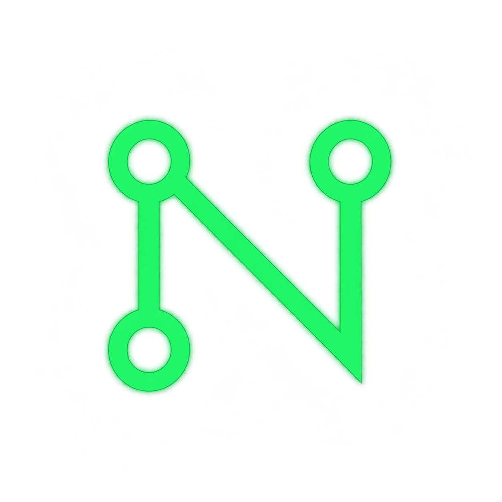

NOVA-01
TEAM LEAD · STRATEGY팀의 문제를 선명한 방향으로 정리합니다.

workspace/nexus-lab/team-profileinit / nexus-lab
조직의 복잡한 업무 흐름을 연결하고, 더 나은 디지털 도구를 만드는 가상 팀입니다.
cat ./about.txt
01 // ABOUTNEXUS LAB은 팀과 팀 사이에서 생기는 복잡한 흐름을 더 읽기 쉽게 만들고, 누구나 사용할 수 있는 디지털 도구로 바꾸는 가상 팀입니다.
문제의 맥락을 읽고, 함께 움직일 수 있는 화면과 도구를 만듭니다.
[x] 이 페이지의 인물과 프로젝트는 모두 연습용 가상 정보입니다.
ls ./people
02 // PEOPLE전략부터 데이터까지, 다섯 가지 역할이 하나의 제품 경험을 함께 만듭니다.
팀의 문제를 선명한 방향으로 정리합니다.
아이디어를 실제로 쓸 수 있는 경험으로 만듭니다.
복잡한 흐름을 쉽게 이해되는 화면으로 바꿉니다.
빠르고 안정적인 웹 경험을 구현합니다.
데이터에서 다음 행동의 힌트를 찾습니다.
git log --projects
03 // PROJECTS아래 프로젝트는 NEXUS LAB의 연습용 가상 사례입니다.
전체 프로젝트 3개를 표시하고 있습니다.
팀 간 요청 흐름을 한눈에 정리하는 업무 지도
반복 문의를 모아 우선순위를 정하는 간단한 대시보드
새 프로젝트의 시작 과정을 안내하는 내부 웹 도구